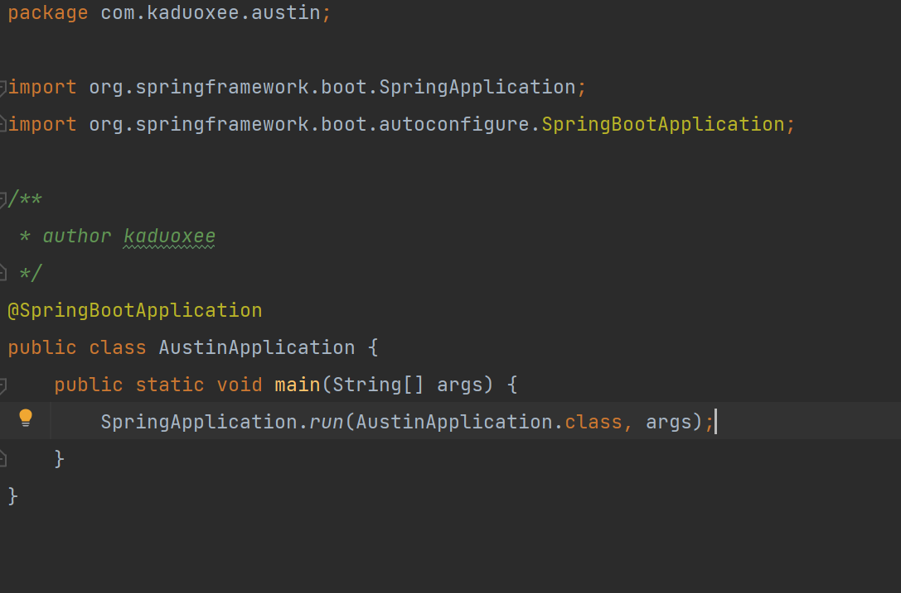
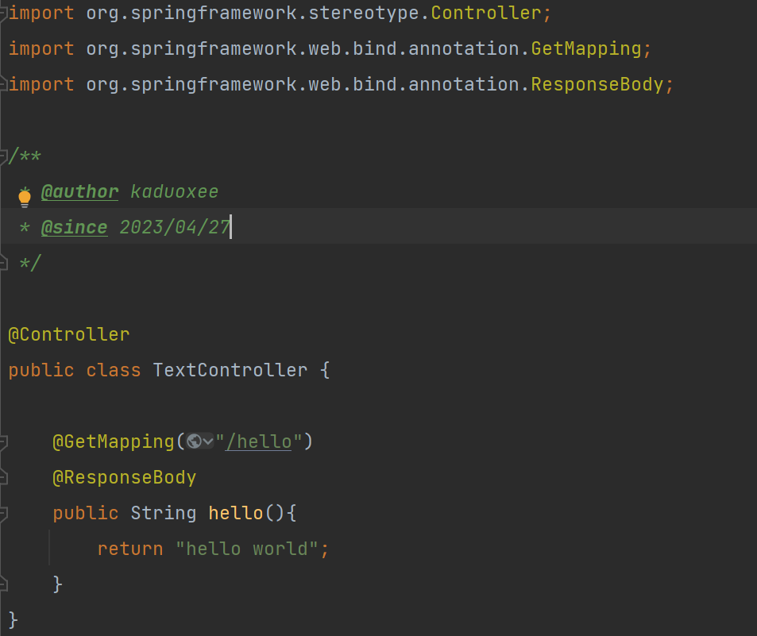
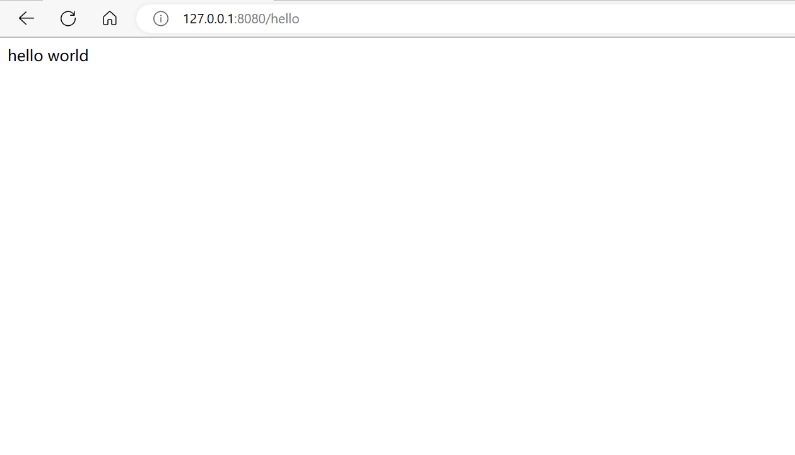

普通maven项目接入springBoot
2023/04/27 12:07:34
一、利用idea创建一个maven项目

直接点击next，然后修改项目名、选择项目所在目录，再直接finish。
二、修改新项目的pom文件
需要给pom文件添加两处内容
1.指定父级依赖
1
2
3
4
5
6
7
<parent>
<groupId>org.springframework.boot</groupId>
<artifactId>spring-boot-starter-parent</artifactId>
<!--SpringBoot版本-->
<version>1.5.9.RELEASE</version>
</parent>
2.引入spring-boot-starter-web依赖
1 | <dependency> |
三、写一个启动类
首先新建一个 com.author.项目名 的包，假定为com.kaduoxee.austin，然后
在austin包下新建启动类如下

四、写一个controller
在上述austin包下新建一个controller或web包，在改包下新建一个控制层类如下
（注意添加@ResponseBody注解，直接返回字符串，因为此时还没有创建html页面）

五、检验是否接入成功
最后我们可以启动app 访问一下127.0.0.1:8080/hello
